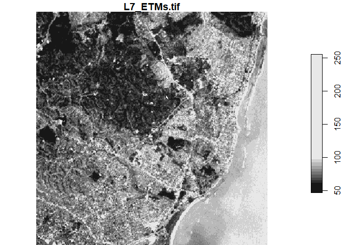
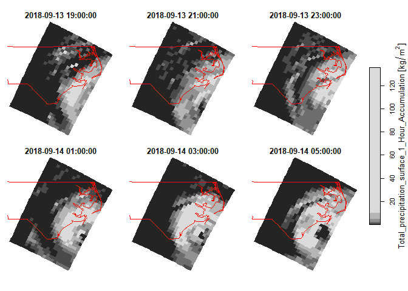
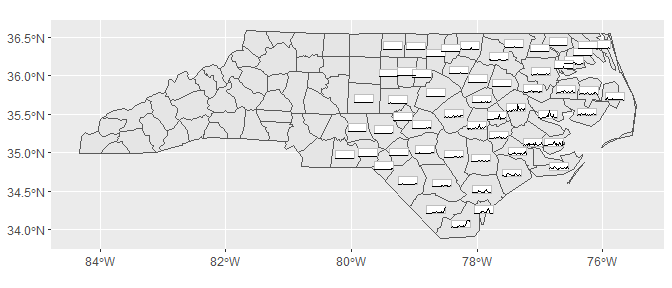

Spatiotemporal data often comes in the form of dense arrays, with space and time being array dimensions. Examples include
- socio-economic or demographic data,
- environmental variables monitored at fixed stations,
- raster maps,
- time series of satellite images with multiple spectral bands,
- spatial simulations, and
- climate or weather model output.
This R package provides classes and methods for reading, manipulating, plotting and writing such data cubes, to the extent that there are proper formats for doing so.
Raster and vector data cubes
The canonical data cube most of us have in mind is that where two dimensions represent spatial raster dimensions, and the third time (or band), as e.g. shown here:

By data cubes however we also consider higher-dimensional cubes (hypercubes) such as a five-dimensional cube where in addition to time, spectral band and sensor form dimensions:

or lower-dimensional cubes such as a raster image:
library(dplyr)
library(stars)
tif = system.file("tif/L7_ETMs.tif", package = "stars")
read_stars(tif) |>
slice(index = 1, along = "band") |>
plot()
Raster data do not need to be regular and aligned with North/East, and package stars supports besides regular also rotated, sheared, rectilinear and curvilinear rasters:

Vector data cubes arise when we do not have two regularly discretized spatial dimensions, but a single dimension that points to distinct spatial feature geometries, such as polygons (e.g. denoting administrative regions):

or points (e.g. denoting sensor locations):

NetCDF’s CF-convention calls this a discrete axis.
NetCDF, GDAL
stars provides two functions to read data: read_ncdf and read_stars, where the latter reads through GDAL. (In the future, both will be integrated in read_stars.) For reading NetCDF files, package RNetCDF is used, for reading through GDAL, package sf provides the binary linking to GDAL.
For vector and raster operations, stars uses as much as possible the routines available in GDAL and PROJ (e.g. st_transform, rasterize, polygonize, warp). Read more about this in the vignette on vector-raster conversions, reprojection, warping.
Out-of-memory (on-disk) rasters
Package stars provides stars_proxy objects (currently only when read through GDAL), which contain only the dimensions metadata and pointers to the files on disk. These objects work lazily: reading and processing data is postponed to the moment that pixels are really needed (at plot time, or when writing to disk), and is done at the lowest spatial resolution possible that still fulfills the resolution of the graphics device. More details are found in the stars proxy vignette.
The following methods are currently available for stars_proxy objects:
methods(class = "stars_proxy")
# [1] [ [[<- [<- adrop
# [5] aggregate aperm as.data.frame c
# [9] coerce dim droplevels filter
# [13] hist image initialize is.na
# [17] Math merge mutate Ops
# [21] plot prcomp predict print
# [25] pull rename select show
# [29] slice slotsFromS3 split st_apply
# [33] st_as_sf st_as_stars st_crop st_dimensions<-
# [37] st_downsample st_mosaic st_normalize st_redimension
# [41] st_sample st_set_bbox transmute write_stars
# see '?methods' for accessing help and source codeRaster and vector time series analysis example
In the following, a curvilinear grid with hourly precipitation values of a hurricane is imported and the first 12 time steps are plotted:
prec_file = system.file("nc/test_stageiv_xyt.nc", package = "stars")
(prec = read_stars(gdal_subdatasets(prec_file)[[1]]))
# stars object with 3 dimensions and 1 attribute
# attribute(s):
# Min. 1st Qu. Median Mean 3rd Qu.
# Total_precipitation_surface... [kg/m^2] 0 0 0.75 4.143009 4.63
# Max.
# Total_precipitation_surface... [kg/m^2] 163.75
# dimension(s):
# from to offset delta refsys
# x 1 87 NA NA WGS 84
# y 1 118 NA NA WGS 84
# time 1 23 2018-09-13 19:00:00 UTC 1 hours POSIXct
# values x/y
# x [87x118] -80.61 [°],...,-74.88 [°] [x]
# y [87x118] 32.44 [°],...,37.62 [°] [y]
# time NULL
# curvilinear grid
# or: (prec = read_ncdf(prec_file, curvilinear = c("lon", "lat"), ignore_bounds = TRUE))
sf::read_sf(system.file("gpkg/nc.gpkg", package = "sf"), "nc.gpkg") |>
st_transform(st_crs(prec)) -> nc # transform from NAD27 to WGS84
nc_outline = st_union(st_geometry(nc))
plot_hook = function() plot(nc_outline, border = 'red', add = TRUE)
prec |>
slice(index = 1:12, along = "time") |>
plot(downsample = c(3, 3, 1), hook = plot_hook)
and next, intersected with with the counties of North Carolina, where the maximum precipitation intensity was obtained per county, and plotted:

We can integrate over (reduce) time, for instance to find out when the maximum precipitation occurred. The following code finds the time index, and then the corresponding time value:
index_max = function(x) ifelse(all(is.na(x)), NA, which.max(x))
b = st_apply(a, "geom", index_max)
b |> mutate(when = st_get_dimension_values(a, "time")[b$index_max]) |>
select(when) |>
plot(key.pos = 1, main = "time of maximum precipitation")
With package cubble, we can make a glyph map to see the magnitude and timings of county maximum precipitation:
library(cubble)
library(ggplot2)
a |> setNames("precip") |>
st_set_dimensions(2, name = "tm") |>
units::drop_units() |>
as_cubble(key = id, index = tm) -> a.cb
a.cb |>
face_temporal() |>
unfold(long, lat) |>
mutate(tm = as.numeric(tm)) |>
ggplot(aes(x_major = long, x_minor = tm, y_major = lat, y_minor = precip)) +
geom_sf(data = nc, inherit.aes = FALSE) +
geom_glyph_box(width = 0.3, height = 0.1) +
geom_glyph(width = 0.3, height = 0.1)
Other packages for data cubes
gdalcubes
Package gdalcubes can be used to create data cubes (or functions from them) from image collections, sets of multi-band images with varying
- spatial resolution
- spatial extent
- coordinate reference systems (e.g., spread over multiple UTM zones)
- observation times
and does this by resampling and/or aggregating over space and/or time. It reuses GDAL VRT’s and gdalwarp for spatial resampling and/or warping, and handles temporal resampling or aggregation itself.
ncdfgeom
ncdfgeom reads and writes vector data cubes from and to netcdf files in a standards-compliant way.
raster and terra
Packages raster and its successor, terra are powerful packages for handling raster maps and stacks of raster maps both in memory and on disk, but do not address
- non-raster time series,
- multi-attribute rasters time series
- rasters with mixed type attributes (e.g., numeric, logical, factor, POSIXct)
- rectilinear or curvilinear rasters
A list of stars commands matching existing raster commands is found in this wiki. A list of translations in the opposite direction (from stars to raster or terra) still needs to be made.
A comment on the differences between stars and terra is found here.
Other stars resources:
- blog posts: first, second, third, and newer blog posts
- vignettes
- the original R Consortium proposal.